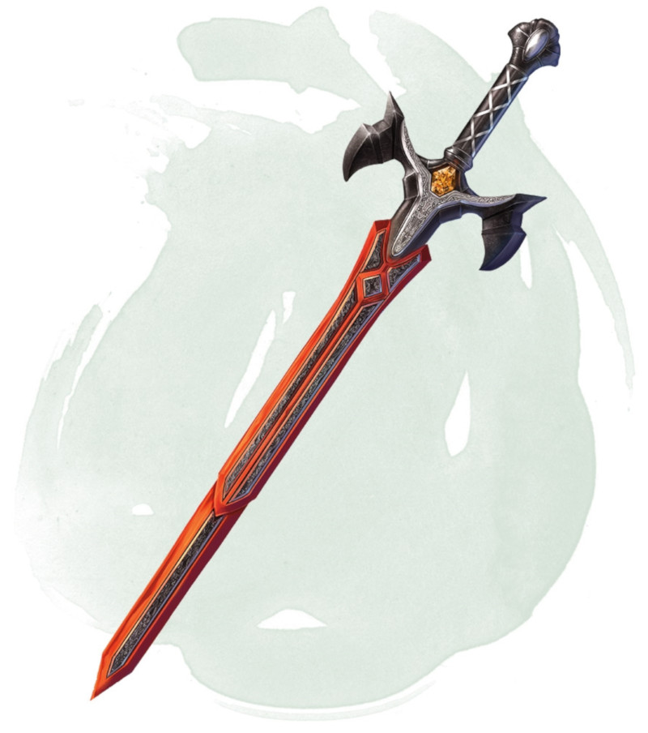

Épée vorpale
[ Vorpal Sword ]
Arme (toute épée qui inflige des dégâts tranchants), légendaire (nécessite un lien)
Vous gagnez un bonus de +3 aux jets d'attaque et de dégâts effectués avec cette arme magique. De plus, l'arme ignore la résistance aux dégâts tranchants.
Lorsque vous attaquez une créature qui possède au moins une tête avec cette arme et que vous obtenez un 20 naturel sur votre jet d'attaque, vous décapitez la créature de l'une de ses têtes. La créature meurt si elle ne peut pas survivre après avoir perdu sa tête. Une créature est immunisée à cet effet si elle est immunisée aux dégâts tranchants, n'a pas besoin de sa tête, ou n'a pas de tête, possède des actions légendaires, ou si le MD décide que cette créature est trop grosse pour que sa tête puisse être amputée avec cette arme. De telles créatures subissent à la place 6d8 dégâts tranchants supplémentaires de ce coup.
Lorsque vous attaquez une créature qui possède au moins une tête avec cette arme et que vous obtenez un 20 naturel sur votre jet d'attaque, vous décapitez la créature de l'une de ses têtes. La créature meurt si elle ne peut pas survivre après avoir perdu sa tête. Une créature est immunisée à cet effet si elle est immunisée aux dégâts tranchants, n'a pas besoin de sa tête, ou n'a pas de tête, possède des actions légendaires, ou si le MD décide que cette créature est trop grosse pour que sa tête puisse être amputée avec cette arme. De telles créatures subissent à la place 6d8 dégâts tranchants supplémentaires de ce coup.
Dungeon Master´s Guide (SRD)
